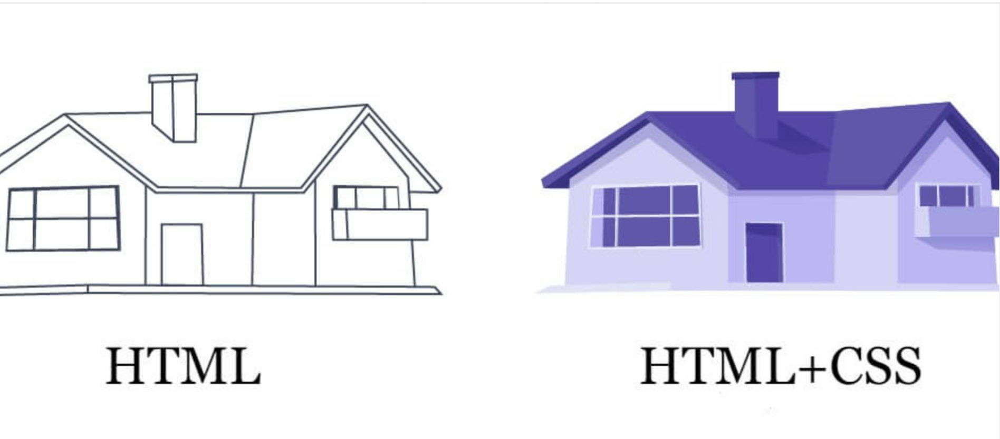

Web development nədir?
Web development prosesində web developerlər özəl bir şəbəkə ya da internet üçün web səhifələr və tətbiqetmələr hazırlayırlar. Web development mütləq bir web saytın dizaynına diqqət yetirmir; adətən web saytın işləməsinin əsas səbəbi olan proqramlaşdırma və kodlaşdırma hissəsi ilə bağlı olan əsas işləri görür. Google-da və digər müxtəlif axtarış motorlarında gördüyümüz və müntəzəm olaraq istifadə etdiyimiz ən sadə web saytlardan mürəkkəb web tətbiqetmələrə və sosial media platformalarından onlayn alış-veriş web səhifələrinə qədər hər şey web developmentin bir hissəsidir. Bütün bu alətlər və web saytlar web developerlər tərəfindən hazırlanır.
Front-end nədir?
Veb-sayt yaradılması şəkil və məzmunla bağlı bütün vizual, audio hissələrini əhatə edən bir prosesdir. Veb saytlara daxil olduğunuz zaman qarşılaşdığınız rəngarəng mövzular, fonlar, şriftlər, dizayn şəkilləri və bunları istifadəçilərin diqqətinə çatdırmaq üçün uyğunlaşdırmaq, səhifəyə yerləşdirmək kimi proseslərə front-end deyilir.
HTML nə işə yarayır?
HTML mətn, video və ya vizual elementləri səhifənin içərisinə yerləşdirməyə və istədiyiniz kimi mövqeləndirməyə imkan verir. Həmçinin, axtarış motorlarına vebsaytlar haqqında məlumat verir. Bu baxımdan veb səhifələr sadə kod strukturları olan teq və atributlardan istifadə etməklə formalaşdırıla bilər. HTML əslində veb saytın skeleti adlandırıla bilər. Başqa sözlə, HTML kodları olmadan vebsayt kodlaşdırıla bilməz. Ancaq bilməniz lazım olan ən vacib şey HTML ilə yaradılan saytın dinamik deyil, statik olacağıdır.
HTML və CSS arasında əlaqə
Əgər işimizi insanla müqayisə etsək, HTML həmin insanın skeleti, CSS isə xarici görünüşü olar. Yəni HTML ilə saytımızın əsas skeletini yaratarkən, CSS ilə mətn rəngləri və fon rəngləri kimi görünüş stilləri veririk. Saytın görünüşünü fərdiləşdirmək üçün bir növ CSS istifadə olunur. HTML və CSS arasındakı əlaqə əsasən bu prinsipə əsaslanır.
Nəticə olaraq
CSS ilə biz saytımızın görünüşünü gözəlləşdirə və bunu edərkən vaxta qənaət edə bilərik. Kompüter ekranları kimi böyük ekranlar üçün hazırladığımız saytımızı kiçik ekranlara uyğunlaşdırıb daha çox istifadəçinin diqqətini cəlb edə bilərik.
JavaScript nədir?
JavaScript-in əsas funksiyalarından biri veb səhifələrə dinamiklik əlavə etməkdir. Buraya animasiyaların göstərilməsi, mətnin görünməsinin dəyişdirilməsi və açılan menyuların yaradılması daxildir.
Veb sayt yaratmaq üçün yalnız HTML və CSS kodundan istifadə edə bilsəniz də, onun yalnız statik ekranı olacaq. JavaScript ilə istifadəçi veb səhifələrlə qarşılıqlı əlaqədə ola bilər və daha yaxşı baxış təcrübəsi əldə edə bilər.